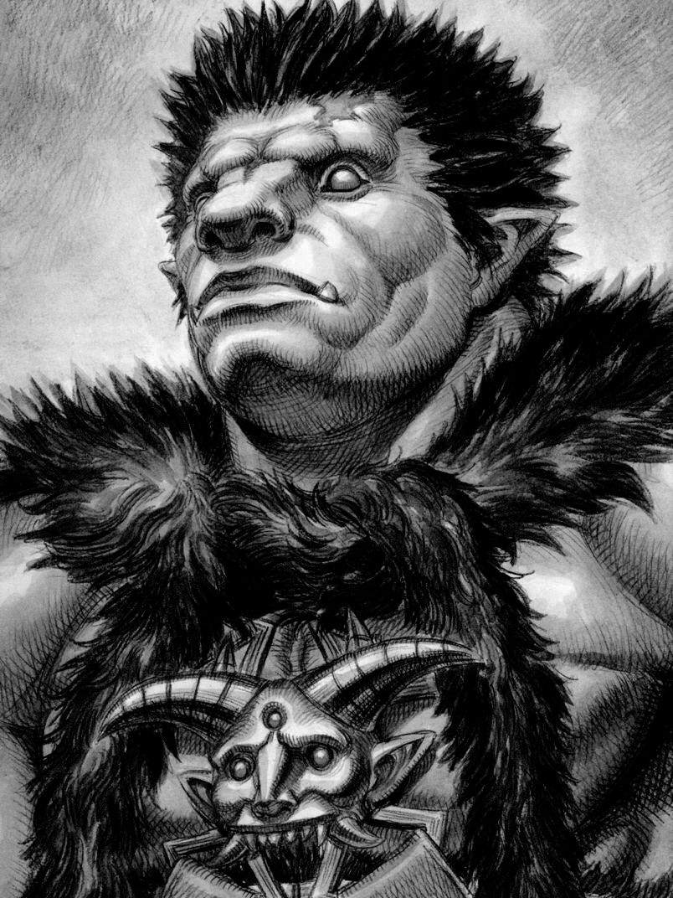
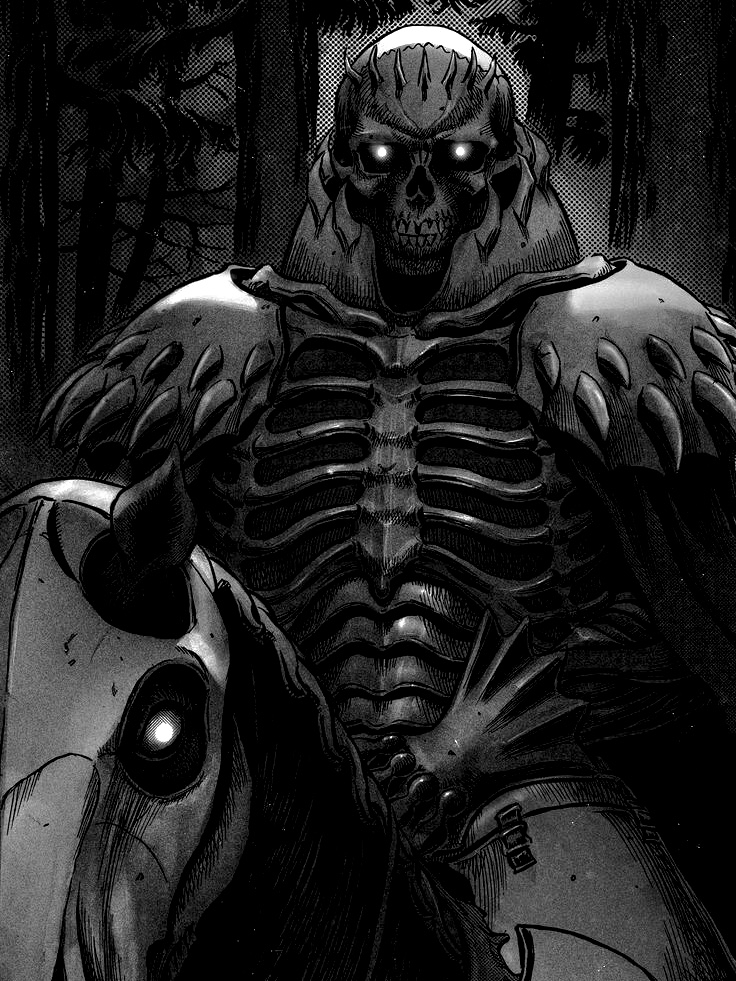

Berserk is a legendary dark fantasy manga created by Kentaro Miura...
Guts is a former mercenary known as the "Black Swordsman," a relentless warrior marked by a tragic past and immense physical strength. Once a member of the Band of the Hawk, he was betrayed during the Eclipse and has since embarked on a personal war against the apostles and the God Hand. Bearing the Brand of Sacrifice, he fights against fate while struggling to retain his humanity.
Griffith is the charismatic and ambitious founder of the Band of the Hawk. Admired for his beauty, intelligence, and tactical brilliance, he sacrifices his comrades during the Eclipse to ascend as the fifth member of the God Hand, Femto. As Femto, he manipulates reality and fate, yet retains his worldly ambitions through his reincarnated form in the physical world.
Casca was the only female commander in the Band of the Hawk and Griffith’s most loyal follower. A skilled fighter and strategist, she shares a deep and complex bond with Guts. After enduring the trauma of the Eclipse, her mind regressed into a childlike state, leaving her vulnerable. She plays a central role in Guts’ struggle and in the fate of the world.

Zodd the Immortal is a legendary apostle who has fought in countless wars for over three centuries. Towering and beastlike in his true form, he revels in battle and respects only those strong enough to challenge him. Despite being a servant of the God Hand, he acts on his own code of honor and often appears at key moments in Guts’ journey.

The Skull Knight is an enigmatic figure and a self-proclaimed "foe of the inhumans," having waged war against demonkind for a millennium. Approximately 1000 years old, he possesses vast knowledge of the world’s events and has remarkable foresight concerning the flow of causality. He breaks into the fifth Eclipse to save Guts and Casca, and later creates an astral fissure using his Sword of Beherits during the Great Roar of the Astral World.